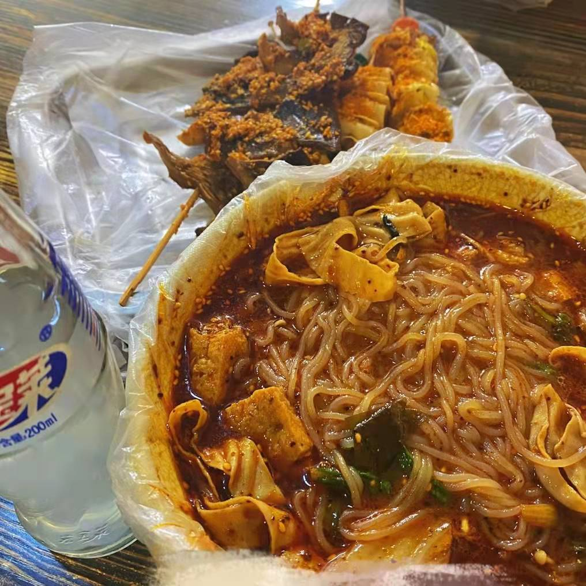
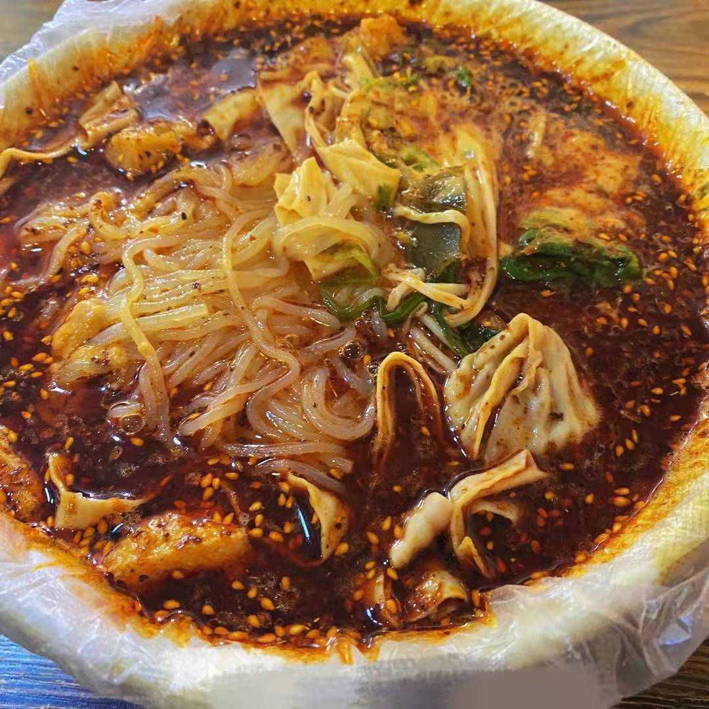

麻辣烫
麻辣烫是一种起源于中国四川地区，流行于中国各地（尤其是四川和重庆）的小吃，其类似于火锅，主要在街头常见。在四川本地更多的是则是传统的冒菜而非麻辣烫（乐山市则另有冷食变种钵钵鸡）。虽然号称“麻辣烫”，部分地区的麻辣烫由于当地人口味的原因会和传统的麻辣烫口味有所不同。
常见食材
肉类：
素菜：
- 藕片
- 莴笋
- 冬瓜
- 香菌
- 豆腐干
- 白菜
- 花菜
- 青菜头
- 面食
- 粉条
- 即食面
麻辣烫的做法详细步骤
- 制卤水。炒锅置旺火上，下菜油烧到6成熟后，下郫县豆办（先朵细）煵酥，速放入姜米、花椒炒香后立即下鲜汤。再放入舂茸的豆豉、研细的冰糖、牛油、醪糟汁、料酒、精盐、胡椒粉、干辣椒、草果等佐料。熬开后打去泡沫即成卤水。
- 制主料。将劳菜洗净、兔腰、鳝鱼、鸭肠切成2厘米长宽的方块；毛肚、猪环喉切成4厘米左右见方。午餐肉切成4厘米左右见方的薄片；素菜切成3厘米左右的薄片。用洗净的竹签，将肴穿成约三四十克一串。
- 烫制。卤水锅置旺火上，使之保持小沸，将各类菜用串好的竹签烫制，根据不同菜肴的火候烫制成熟。
- 蘸食。烫制成熟的菜肴放在装有辣椒面和炒盐的盘内，根据自己的口味需要蘸辣椒和盐后食用。或蘸或不蘸，或多或少由自己决定。


贴士：
烫制的成品不熟。麻辣烫使用的主料应是比较容易成熟的。不能采用象鸡翅、鸡爪、鸭掌、牛肉等不容易烫熟的原料。鳝鱼、带鱼一类的菜肴，烫制的时间也应长一些，烫制这类原料时不要摆动过多、过快，掌握好火候，就不会出现不熟的问题了。